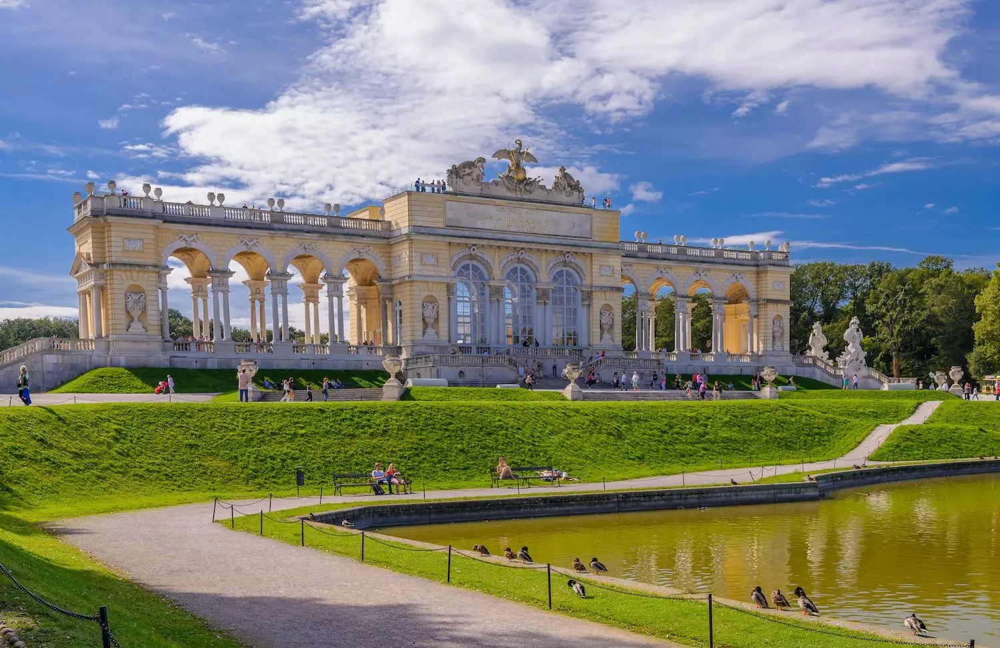

A Schönbrunn kastély nem csak Bécs, hanem Ausztria jelképe is. A kastélyt több mint másfél millió ember tekinti meg évente. Az épület helyén már a 15. század óta nemesi családtól nemesi családig vándorolt. Volt, amikor állatkertnek és vadászkastélynak szánták, és volt, amikor császári rezidencia lett. A kastély igazi kulturális központtá válására csak Mária Terézia uralkodása alatt került sor, aki amellett, hogy pompásan felújíttatta, az udvari élet középpontjává is tette. A kastély minden nap 9:30-tól délután 5-ig látogatható. A kastélyban csak vezetett túrán lehet részt venni. A jegyek között különbözőek találsz, annak függvényében, hogy hány termet szeretnél bejárni, és milyen más látványosságokkal szeretnéd kombinálni a kastélylátogatást. A kastély rövidebb túrája a felnőttek számára 18 euro, gyermekek számára pedig 13 euro.
A Belvedere kastély egy pompázatos 18. századi műemlék, amit Savoyai Jenő herceg és Lukas von Hildebrandttal építtetett. A kastélyt 1714 és 1723 között építették. Az épület Mária Terézia nyomán vált a művészeti kiállítások és élet fontos helyszínév, mivel ő helyezte ide a Habsburgok művészeti kollekcióját. A kastélynak három nagyon része van, a Felső-Belvedere, az Alsó-Belvedere és a Belvedere kertek. A felső rész a leglátványosabb, ami már a főhomlokzathoz érve is szembetűnő. Az alsó rész az Osztrák Galériának ad helyet, ami viszont kívülről egy szerényebb épület képét adja. Ennek oka, hogy ez eredetileg a Savoyaiak nyári rezidenciája volt. Belül ezért meglepetéseként érhet a hatalmas vörös márványterem, és a hatalmas tükrökkel és szobrokkal berendezett belső tér.

A kastély szintén a Habsburg család birtokai közé tartozott már a 14. század óta és az ő nevükhöz köthető, hogy a területen egy csodálatos vadászkastély épült, ami később tovább bővült egy vadasparkkal és egy hatalmas, mesebeli kerttel is. A kastély, hasonlóan a Schönbrunni kastélyhoz, Mária Terézia uralkodása alatt élte fénykorát. Ekkor új épületekkel és kertekkel bővült a birtok. Érdekessége, hogy Sisi és I. Ferenc József itt töltötte nászútját.